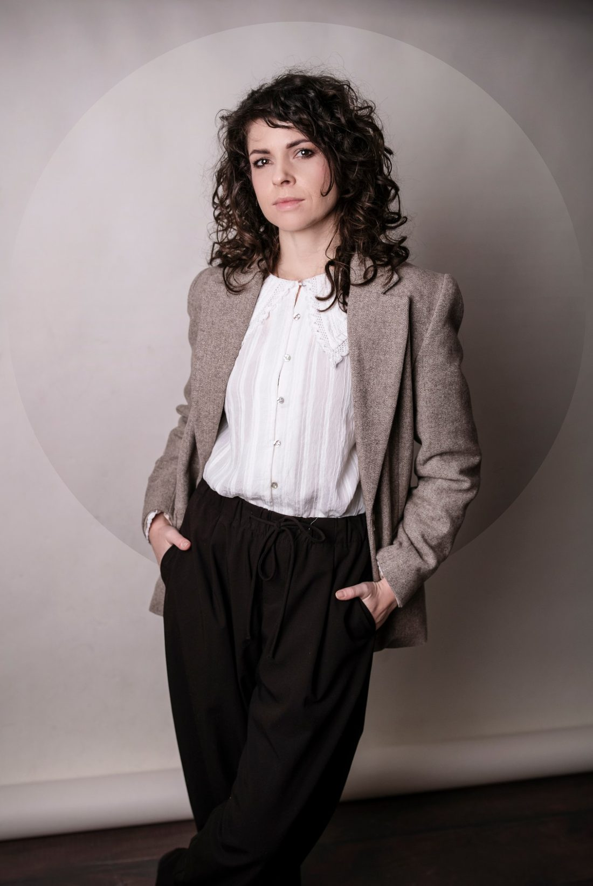

Prowadzę praktykę doradztwa podatkowego w Świebodzinie, świadcząc usługi na terenie całej Polski. Wspieram przedsiębiorców i osoby fizyczne w sprawach podatkowych — od rozpoczęcia działalności, przez bieżące rozliczenia, po reprezentację przed organami podatkowymi i sądami administracyjnymi.
Stawiam na jasne wyjaśnianie przepisów, praktyczne rozwiązania i indywidualne podejście do każdego klienta. Gwarantuję rzetelność, zaangażowanie oraz profesjonalne wsparcie w podejmowaniu świadomych decyzji podatkowych.
Zapraszam do kontaktu. Omówimy Twoją sytuację i ustalimy zakres usług odpowiadający Twoim potrzebom.
Przejdź do kontaktu